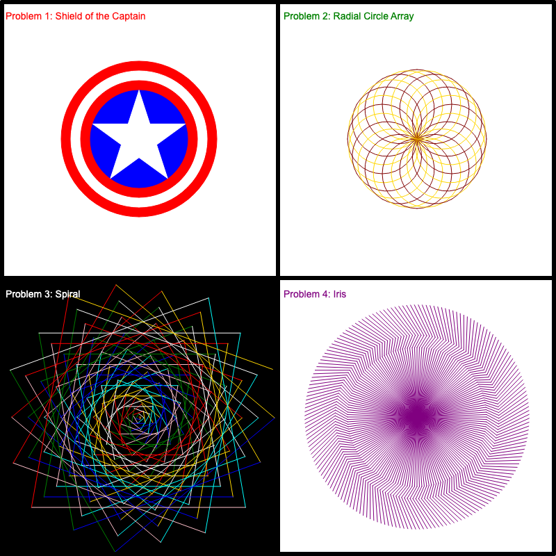

Extra Credit — Turtle Art
Worth: 60 bonus points Due: Sunday, October 11, 2026, 11:00 PM (same as Assignment 4) Submit: your Colab link in the Extra Credit: Turtle Art assignment on Sakai Notebook: Open the Turtle Art notebook in Colab (view-only; File → Save a copy in Drive first)
The challenge
Write turtle code that recreates this image as closely as you can.

This builds directly on the Week 6 lab: shape functions that draw centered on a point, loops of shapes that make patterns, and careful placement on the canvas.
How the notebook works
The notebook walks you through it one piece at a time:
- Part 1: Shield of the Captain (practice)
- Part 2: Radial Circle Array (practice)
- Part 3: Spiral (practice)
- Part 4: Iris (practice)
- Part 5: Titles and background lines (practice)
- Part 6: The final image ⭐ graded
Each practice part points you at what to look for in the reference, gives conceptual hints, and lets you test that one drawing by itself. The numbers, colors, and details are yours to discover: study the reference, draw, compare, and tweak until they match. Only Part 6 is graded: copy your finished functions into it and draw the whole picture in one cell.
How it’s graded
I run only your Part 6 cell, save the image it draws, and compare it pixel by pixel with the reference image above. Each piece is scored by how closely it matches: an exact match earns full points, and a close match earns most of them.
| Graded piece | Points |
|---|---|
| Panel 1: Shield of the Captain | 10 |
| Panel 2: Radial Circle Array | 10 |
| Panel 3: Spiral | 10 |
| Panel 4: Iris | 10 |
| Placement: each drawing centered in its panel, with its title | 10 |
| Background lines: the black border and the center cross, all the same thickness | 10 |
| Total | 60 |
Tips
- Test one drawing at a time. Get Panel 1 right on its own before you move on.
- Circles start at the bottom.
circle(r)begins at the turtle’s position, so to center a circle on(cx, cy), start at(cx, cy - r). - Order matters in Part 6. Draw the four pictures, then the titles, then the black lines last, so the lines sit on top.
- Zoom in on the reference. The spiral and the iris hide their secrets in the details: count directions, look at one ray.
- Run Part 6 by itself before submitting. If it only works when the earlier cells ran first, it won’t work when I grade it.
Using AI
Per the syllabus, AI is welcome: ask it to explain turtle commands, debug your code, or talk through the geometry. You must be able to explain every line you submit.